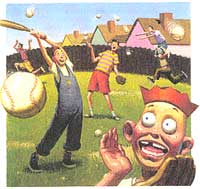

LAST LAUGH
Having sons of nine and eleven, I have been liberally exposed to the Little League baseball scene. And I am prepared to testify that baseball is not what it was.
We came up through the real "sandlot" days; that is to say that somebody in a neighborhood (for whom kids were more important than grass) had a yard where the grass was worn thin and the sand showed through in great irregular splotches. There wasn't any elevated pitcher's mound with a rubber mat, and the bases were likewise unmarked.
There was, of course, no umpire to settle disputes. Even if there had been enough players to field two full teams (which probably only happened on the occasion of family reunions), nobody would have dreamed of surrendering judgments to anyone less than God or the junior-high gym teacher. Much of the satisfaction of the game derived from those wonderful arguments about whether one was safe or not. Without any bags to step on, who could say?
The guy who could shout the loudest usually won the point. Not satisfied with that, you could throw down the ball and go home. If you left your team shorthanded enough, you had the satisfaction of knowing you'd destroyed the game; or, better still, they'd beg you to stay. And if they won you over with their, "Aw, c'mon..." you were something of a second-rate hero.
A gang collected spontaneously of a spring or summer evening- along with a couple of recognized champions-tossed a bat back and forth, stacking their alternative fists up its length to determine first choice of players or "ups." There were certain unwritten rules they followed. For example, if you owned the ball, you got to be pitcher. If the bat was yours you were first up. (And knowing that you could take your bat or your ball and go home was a real sense of power!) The kid lucky enough to own a glove either played first base or was conned into loaning it to a better player.
The weakest and smallest kid was usually catcher, and he played way back behind the batter. Catchers were considered expendable; in fact, the position was usually filled ineptly by some member of the team at bat. If you were mediocre, you played out in the field. When you had a rare opportunity to holler "I've got it!" you invariably collided with a second baseman who was convinced he could do a better job of catching a fly. And who was there who didn't agree with him? (If you think this sounds like the belated grumbling of a left fielder, you're right.)
Those games were never won or lost conclusively. They were usually called on account of darkness, and the apparent winners went home buddy-buddy, talking about getting together tomorrow to form a club or perform some other exclusive right. The loser quarreled among themselves about who was at fault and agreed only on the point that the opponents were a bunch of "dirty double cheaters." Oh, it was all wonderfully disorganized.
And then the adults got into the act and organized the whole business. I think we were always aware subconsciously that the game and the circumstances were imperfect and at fault. Besides, we could always rationalize that we were right, no matter who won the point. Once there was an umpire to declare the right and the wrong, kids could only direct their spite at one another, at the umpire, or at the coaches. The game improved and human relations deteriorated.
I suppose the thing I resent most is the loss of spontaneity from the game. I've never been very responsive to strict schedules for myself, so it's no small wonder that I take a dim view of regimenting nine-year-olds (especially when it means I must organize my household around ball games).
However, for all my objections, I see signs of hope. Our scrub team has a 0-4 record, yet at last week's game I heard nobody poor-mouthing the coach. One of the local fathers was forced into service at the last minute as an ump, and nobody hurled any epithets or bottles at him. None of the kids cried or stamped on their hats either.
There was a general sense of pride in these little kids, that they perform with the skill and nonchalance they do. There was an air of conviviality in the crowd, and as the game broke up, spectators from both sides laughed and chatted together.
I was impressed that these are parents who still see things in the right proportion and recognize that as an attribute to pass on to their children.
From A Thread of Blue Denim by Patricia Penton Leimbach. Copyright © by Patricia Penton Leimbach.
|
 |
|
|